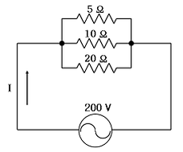
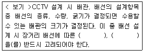

경비지도사-2차(기계경비기획및설계) (2008-11-09 기출문제)
1. 기계경비시스템의 방범감시 구역 내의 내부 침입자를 감시하는 열선감지기의 설치조건으로 옳은 것은?
- 침입자의 움직임을 감시하므로 조명, 히터 등의 열원이 발생하는 곳에도 설치한다.
- 창문, 계단 등의 기류가 발생할 수 있는 장소에도 설치한다.
- 침입자의 움직이는 예상로가 경계범위를 횡단하는 방향으로 설치한다.
- 창문, 유리출입문 등으로 들어오는 직사광선을 마주보고 설치한다.
(정답률: 알수없음)

2. 적외선 감지기에 대한 설명으로 틀린 것은?
- 도플러 효과를 이용한 것으로 옥내용이다.
- 대기 중의 안개나 먼지에 영향을 받을 수 있다.
- 파장대역이 가시광선보다 길어서 인간의 눈에 보이지 않는다.
- 반사형의 경우, 셔터용 또는 실내용으로 사용이 가능하다.
(정답률: 알수없음)
3. 연기감지기의 이온화식은 어느 원리를 이용한 것인가?
- 광 감지
- 이미지 감지
- 온도 감지
- 화학 감지
(정답률: 알수없음)
4. 특정 공간의 물체가 카메라를 기준으로 일정거리에서 앞, 뒤로 이동하여도 여전히 양호한 초점상태를 유지할 수 있는 거리를 초점심도(또는 피사체심도)라 한다. 초점심도에 관한 설명으로 틀린 것은?
- 렌즈의 초점거리가 짧을수록 초점심도는 길어진다.
- 렌즈의 조리개를 작게 할수록 초점심도는 길어진다.
- 피사체까지의 거리가 멀어질수록 초점심도는 길어진다.
- 렌즈의 개구직경이 클수록 초점심도는 길어진다.
(정답률: 알수없음)
5. CCTV시스템의 녹화용으로 사용되는 DVR 기능 및 특성에 관한 설명으로 틀린 것은?
- 시스템을 확장할 수 있어 장시간 녹화가 가능하다.
- 반복적으로 녹화, 재생에도 화질이 변하지 않는다.
- Frame Switch 추가 시 32대까지 다중녹화, 재생이 가능하다.
- 통신회선을 이용하여 원격지에서 감시 및 제어가 가능하다.
(정답률: 알수없음)
6. CCTV 시스템 설계 시 고려해야 할 사항으로 틀린 것은?
- 설치장소의 역광여부를 고려한다.
- 피사체를 충분히 볼 수 있는지 확인한다.
- 옥외 설치는 가급적 피한다.
- 야간의 조명 여부와 밝기를 고려하여 설치한다.
(정답률: 알수없음)
7. 카메라 렌즈 선정 시 감시 대상물(피사체)과 카메라의 거리를 계산하여 렌즈를 선정한다. 1/3인치 촬상소자를 사용한 카메라에서 피사체까지의 거리가 8 m이고, 수평 촬상범위가 4 m일 때 렌즈의 초점거리는? (단, 이미지사이즈는 4.8 mm로 한다.)
- 2.4 mm
- 4.8 mm
- 7.2 mm
- 9.6 mm
(정답률: 알수없음)
8. 다음의 회로에서 전체전류(I)는 몇 A 인가?

- 20 A
- 40 A
- 50 A
- 70 A
(정답률: 알수없음)
9. 교류회로에서 전압과 전류의 위상차에 대한 설명으로 옳은 것은?
- 코일회로에서는 전류가 전압보다 위상이 90° 앞선다.
- 저항회로에서는 전류와 전압은 주파수에 따라 위상이 변한다.
- 콘덴서회로에서는 전압은 전류보다 위상이 90° 뒤진다.
- 모든 회로에서는 전류와 전압의 위상차가 없다.
(정답률: 알수없음)
10. 전기설비 접지의 종류 중 사용 목적이 다른 접지는?
- 제 1종 접지
- 제 2종 접지
- 제 3종 접지
- 특별 제 3종 접지
(정답률: 알수없음)
11. TCP(Transmission Control Protocol)의 특징을 설명한 것으로 틀린 것은?
- 데이터의 전송단위는 세그먼트이다.
- 서비스의 형태는 비연결성이다.
- 수신 순서는 송신순서와 동일하다.
- 오류제어 및 흐름제어가 있다.
(정답률: 알수없음)
12. 전선의 화재를 일으키는 원인 중 가장 큰 것은?
- 허용 전류
- 단선 전류
- 단락 전류
- 돌입 전류
(정답률: 알수없음)
13. 다음 설명 중 옳은 것은?
- 전선로는 절연부분과 접지부분으로 되어 있으며 절연부분은 대지로부터 절연되어 선로이상 전류발생시 고장전류를 안전하게 계통에 순환시켜야 한다.
- 접지는 그 저항치가 가능한 한 커야한다.
- 고장 시 대지전위 상승은 절연파괴를 일으킬 수 있으므로 대지전위는 가능한 한 낮춰야 안전하다.
- 특별고압에서는 누설전류가 중요하고 저압에서는 누설전류를 고려하지 않는다.
(정답률: 알수없음)
14. 전송 선로의 누화 원인으로 틀린 것은?
- 정전 결합
- 전지 결합
- 도체저항의 불평형
- 도체 절연저항
(정답률: 알수없음)
15. 다음 중 정보통신 시스템을 분류할 때 정보전송 시스템의 구성요소가 아닌 것은?
- 단말장치
- 신호변환장치
- 통신제어장치
- 중앙처리장치
(정답률: 알수없음)
16. OSI 참조모델에서 정의된 최상위 계층은 어느 것인가?
- 물리계층
- 세션계층
- 응용계층
- 표현계층
(정답률: 알수없음)
17. 다음 중 근거리 통신망(LAN)인 FDDI(Fiber Distributed Data Interface)에서 사용되는 정보통신망의 구성 형태는?
- 링(ring)형
- 트리(tree)형
- 스타(star)형
- 그물(mesh)형
(정답률: 알수없음)
18. 정보통신시스템의 신뢰성 설계의 기초요소가 아닌 것은?
- 보안성
- 보전성
- 가용성
- 보수성
(정답률: 알수없음)
19. 음성 신호를 패킷 데이터로 변환하여 인터넷으로 전화 서비스를 제공하는 것은?
- VoIP
- BcN
- RFID
- DBM
(정답률: 알수없음)
20. IPv6의 주소 공간은 몇 비트인가?
- 16비트
- 32비트
- 64비트
- 128비트
(정답률: 알수없음)
21. 화재감지기의 기종별 설치기준에 관한 설명으로 옳은 것은?
- 연기감지기는 계단, 복도, 천장의 높이가 20m 미만의 장소에 설치한다.
- 차동식 분포형 감지기는 실내의 공기 유입구로부터 1.5m 이상의 위치에 설치한다.
- 정온식 감지기는 최고 주위 온도보다 공칭 작동 온도가 10℃ 이상 높은 감지기를 설치한다.
- 차동식 스포트형 열감지기는 55° 이상 경사가 되도록 설치한다.
(정답률: 알수없음)
22. 옥외용 적외선 감지기의 설치 및 사용조건 중 외부요인에 의한 오보대책의 설명으로 틀린 것은?
- 강력한 외란광이 들어오지 못하도록 설치한다.
- 현장여건에 맞게 감지 응답속도를 설정한다.
- 자연적인 온도 변화에 오작동을 피하기 위해 감도를 조절하고 복수의 초전검출기를 사용한다.
- 외란광의 간섭을 막기 위해 투광 펄스의 변조 주파수를 바꿔 수광기가 판별하는 것과 여러 종류의 주파수를 절체한다.
(정답률: 알수없음)
23. 주요시설의 외곽 울타리를 감시하고자 할 때 외곽 침입감지장치 선정 원칙과 사용자의 요구사항에 관한 설명으로 틀린 것은?
- 오경보, 오작동을 최소화해야 한다.
- 설치 및 유지보수가 용이하여야 한다.
- 반드시 국가 공인기관의 품질인증을 받아야 한다.
- 사용, 조작이 간편하고 경보의 식별이 용이하여야 한다.
(정답률: 알수없음)
24. 다음 중 전원을 공급하지 않아도 작동이 되는 감지기는?
- 초음파 감지기
- 자석 감지기
- 적외선 감지기
- 열선 감지기
(정답률: 알수없음)
25. 마이크로웨이브 무선망으로 영상신호를 전송하는 방식의 특징 설명으로 잘못된 것은?
- 케이블을 설치할 수 없는 곳에서도 전송할 수 있다.
- 단거리 전송인 경우 유선 통신보다 경제적이다.
- 재해 시에도 전송로의 장애가 적다.
- 안개나 눈 등의 환경조건에 영향을 받을 수 있다.
(정답률: 알수없음)
26. 불안정한 전압이나 카메라 구동속도의 변화로 인하여 화면이 깜박거리는 현상으로 형광램프 사용 시 자주 나타나는 것은?
- 플리커
- 모아레
- 노이즈
- 화이트
(정답률: 알수없음)
27. 보기에서 ( )안에 들어갈 용어로 가장 적합한 것은?

- 공사비, 배선경로
- 접속점, 접속저항
- 전압강하, 선로손실
- 지반침하, 도로굴착
(정답률: 알수없음)
28. 기계경비시스템의 전송선로에 대한 설명 중 잘못된 것은?
- 전용 회선은 24시간 회선 감시가 가능하다.
- Point-to-Point 방식은 공중회선의 장점이다.
- 공중회선은 전용회선에 비해 신호전송이 느리다.
- 전용회선은 독자적인 망 구축 및 다양한 단말기 접속이 가능하다.
(정답률: 알수없음)
29. 통신선로 설계 시 전력 유도 대책에 관한 설명으로 틀린 것은?
- 전력선의 계통분리 및 부하조정을 한다.
- 전력시설의 이설 및 전기통신시설의 이설을 한다.
- 차폐선설치 및 전기 통신회선의 평형도 개선을 한다.
- 선로의 접속점에서 선로를 서로 상쇄되도록 2회선을 교차시킨다.
(정답률: 알수없음)
30. 자석의 자계가 코일에 영향을 주어 전류가 유발되는 현상을 전자유도현상이라 하며, 이때 코일 속에 자석을 이동시키면 기전력이 발생되고 자속을 멀리하면 자속이 줄어들게 되는 법칙은?
- 렌쯔의 법칙
- 암페어의 법칙
- 플레밍의 왼손 법칙
- 플레밍의 오른손 법칙
(정답률: 알수없음)
31. 기계경비시스템에서 사용되는 배선재에 노이즈(Noise)가 유입되어 통신 또는 신호의 장애를 받을 우려가 있는 경우에 사용되는 선재는?
- 실드 케이블
- 비닐절연 케이블
- VFF 케이블
- VCTF 케이블
(정답률: 알수없음)
32. 금속도체와 반도체에서 온도가 상승할 경우 저항의 온도 특성을 설명한 것으로 옳은 것은?
- 금속도체의 저항은 증가하고 반도체의 저항은 감소한다.
- 금속도체의 저항은 감소하고 반도체의 저항은 증가한다.
- 금속도체의 저항은 증가하고 반도체의 저항도 증가한다.
- 금속도체의 저항은 감소하고 반도체의 저항도 감소한다.
(정답률: 알수없음)
33. 전기적 에너지로 인한 열이 아닌 것은?
- 저항열
- 유도열
- 압축열
- 아크열
(정답률: 알수없음)
34. 누전 경보기의 기본 구성요소가 아닌 것은?
- 축전기
- 수신기
- 음향기
- 변류기
(정답률: 알수없음)
35. 전선의 구비조건이 아닌 것은?
- 비중이 작을 것
- 기계적 강도가 클 것
- 내구성이 양호할 것
- 전도율이 작을 것
(정답률: 알수없음)
36. 기계경비시스템의 방범설비공사에 설치되는 접지공사의 배선재 사용기준에 관한 설명으로 틀린 것은?
- 접지선은 단독으로 배선되어 한눈에 쉽게 식별할 수 있는 경우에는 녹색표지를 하지 않아도 된다.
- 접지선은 수전실, 전기실, 방범 감시반에도 IV 전선 또는 이와 동등 이상의 절연효과가 있는 전선을 사용하는 것을 원칙으로 한다.
- 녹색 또는 황록색 얼룩무늬 모양 이외의 절연전선을 접지선으로 사용할 경우에는 말단 및 적당한 개소에 녹색테이프로 표시하여도 된다.
- 접지선은 모든 전기공사에 적용되며, 공사시방서 및 설계도서에 따라 시설장소에 적합하게 시공한다.
(정답률: 알수없음)
37. 두 종단간에 연결을 설정한 후에 데이터를 8비트의 바이트 스트림으로 교환하는 연결형 프로토콜은?
- IP
- TCP
- UDP
- FTP
(정답률: 알수없음)
38. OSI 7계층 중 네트워크 계층의 기능이 아닌 것은?
- 경로 배정 및 중계(Routing & Relaying)
- 암호화(Encryption)
- 흐름제어(Flow Control)
- 순서제어(Sequence Control)
(정답률: 알수없음)
39. 광섬유 케이블의 특징 설명으로 틀린 것은?
- 가격이 싸고, 대역폭이 좁다.
- 케이블이 가볍고 심선이 가늘다.
- 감쇠 영향이 아주 낮다.
- 외부 전자기장의 영향이 없다.
(정답률: 알수없음)
40. 통신프로토콜의 기본요소가 아닌 것은?
- 구문(syntax)
- 의미(semantic)
- 개체(entity)
- 순서(timing)
(정답률: 알수없음)